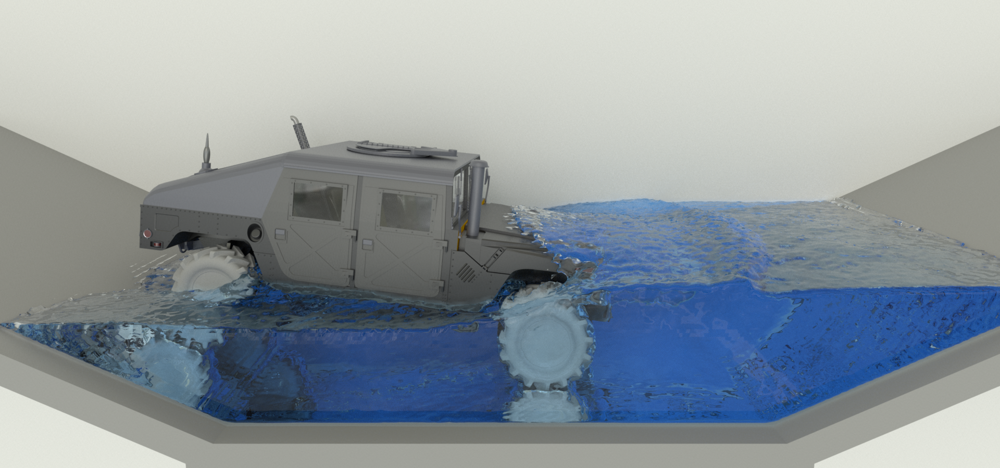
Vehicle Fording

Collapse of Two Vaults
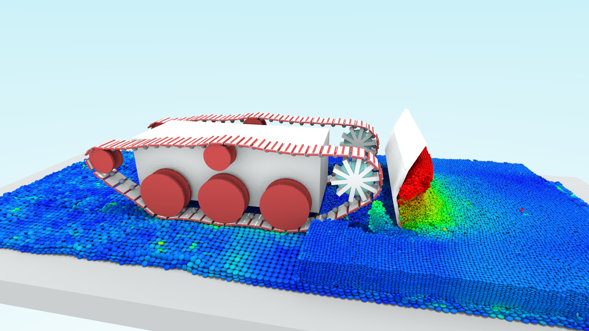
Tracked Vehicle
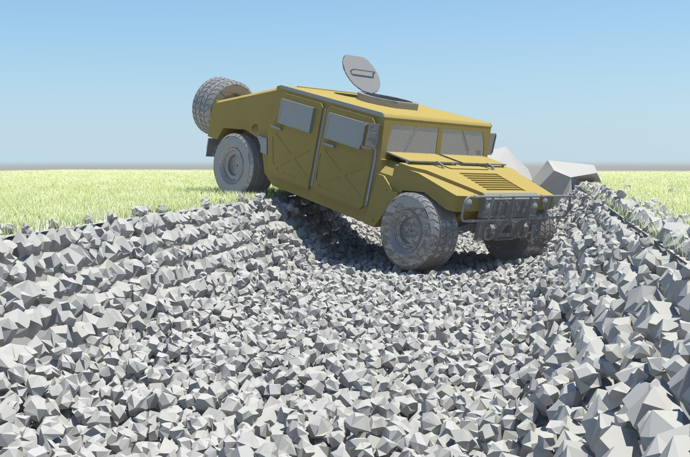
Vehicle Negotating Ditch
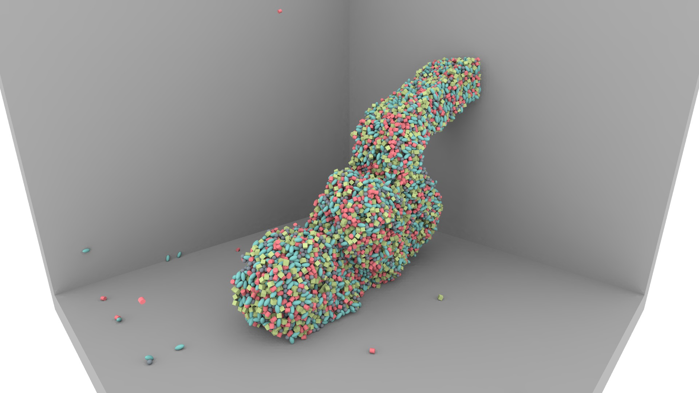
Extrusion, Composite Material
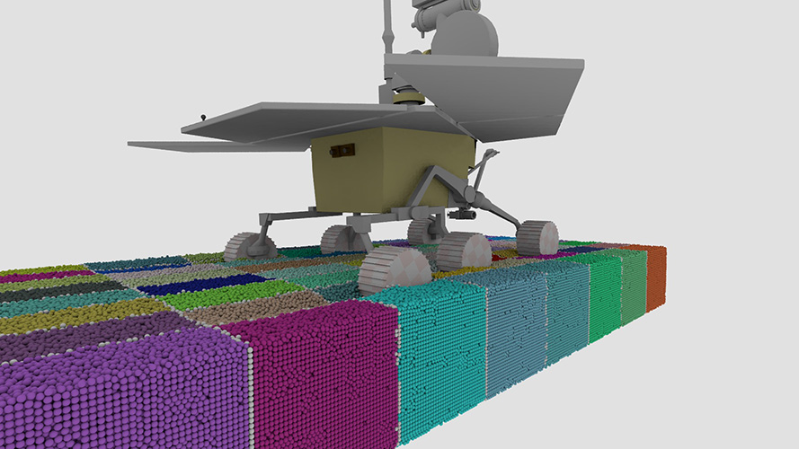
Rover 2 Million Bodies

Mechanical Clock
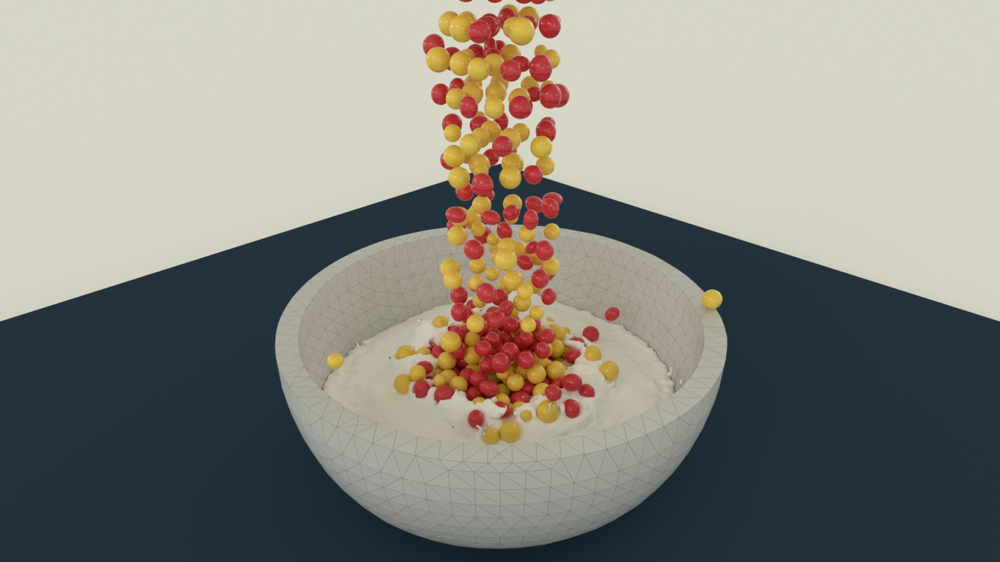
Flexible Bowl Filled With Milk And Cereal
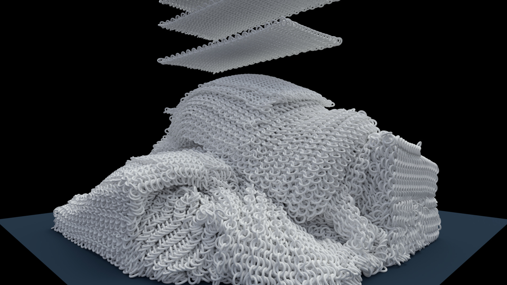
Chain-mail Sheets, 3D Printing Related

Anchoring in Poly-Disperse Granular Material
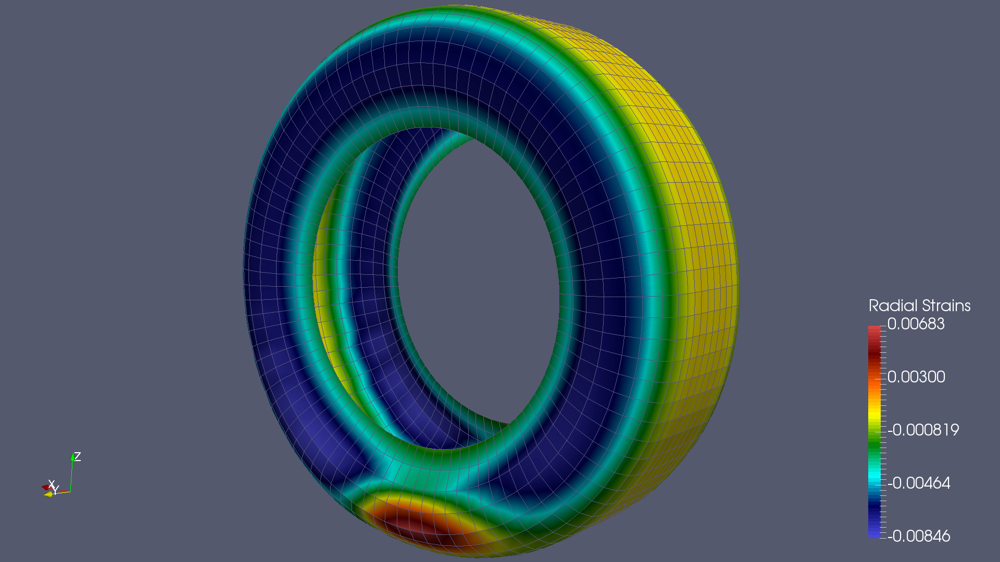
Radial Strain Distribution in ANCF HMMWV Tire
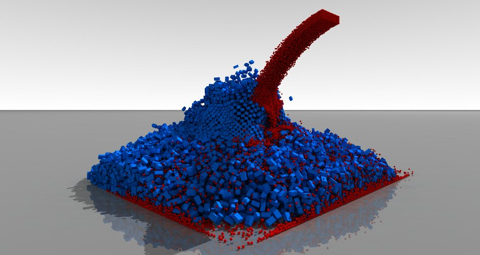
Sphere-Hexahedron Mixing Problem
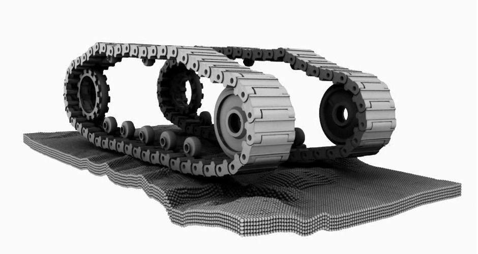
Double Track
Block Tower
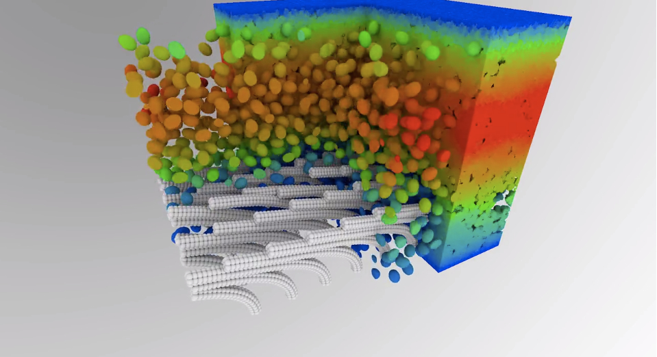
Fluid-Solid Interaction
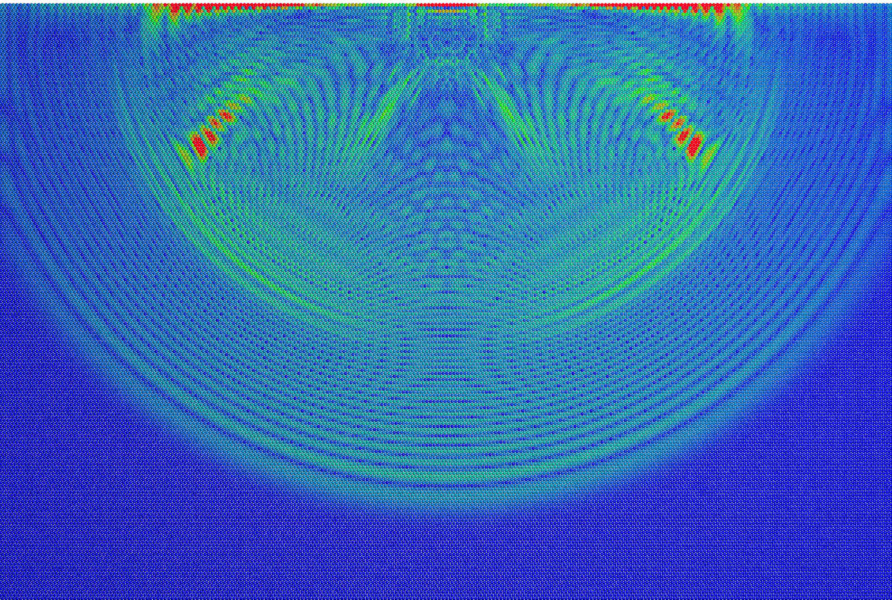
Shock-Wave Propagation in Granular Material
Simulated Using {% include module.html first="" second="CHRONO" %}: